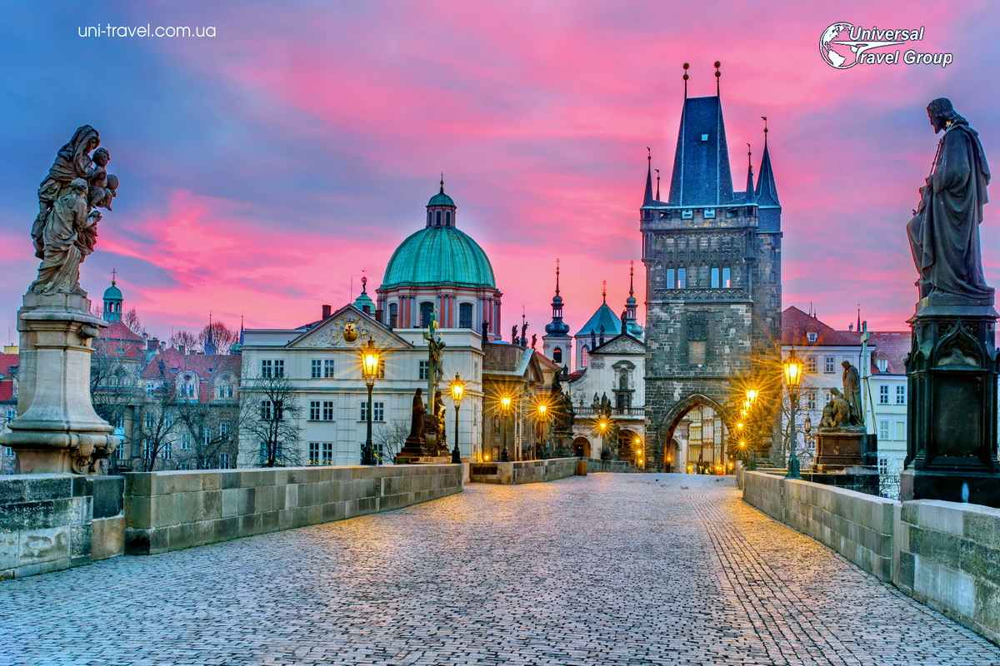

Бойко Денис Сергійович
Дата і місце народження: 14.01.2007, М. Київ, Україна.
Освіта: Ліцей №142 1-11 Клас, НТУУ КПІ ФІОТ 1-3 Курс, група ІМ-42.
Мої хобі
- Гра в ігри та моди
- Моддинг ігр, зокрема на idTech та Source
- Графічний дизайн у Photoshop
Мої улюблені книги або фільми
- Фільм: Star Wars Episode III: Revenge of the Sith (2005)
- Фільм: S.T.A.L.K.E.R.: Shadow of the Zone (2024)
- Книга: Серія "Лабиринты Ехо"
- Книга: Серія "Игра Хаоса"
Моє улюблене місто
Прага
Прага — столиця та найбільше місто Чехії, розташована в західній частині Чехії, в історичній області Богемія.

Натисніть на заголовок улюблених книг або фільмів та на елемент списку під ним, щоб змінити кольори. З клавіатури: Tab, потім Enter або пробіл.